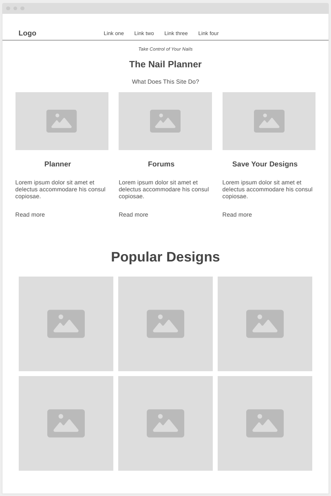
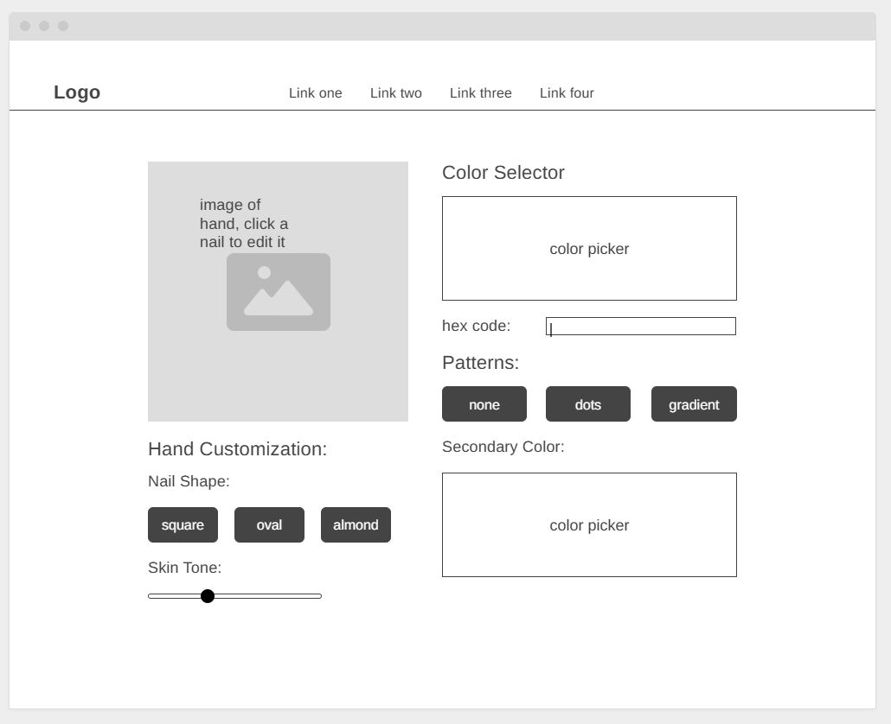
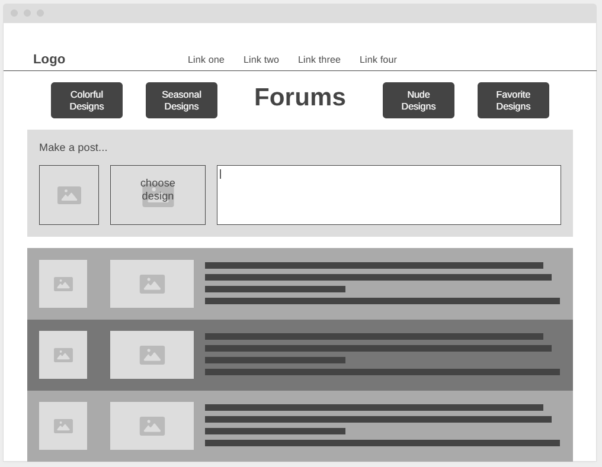
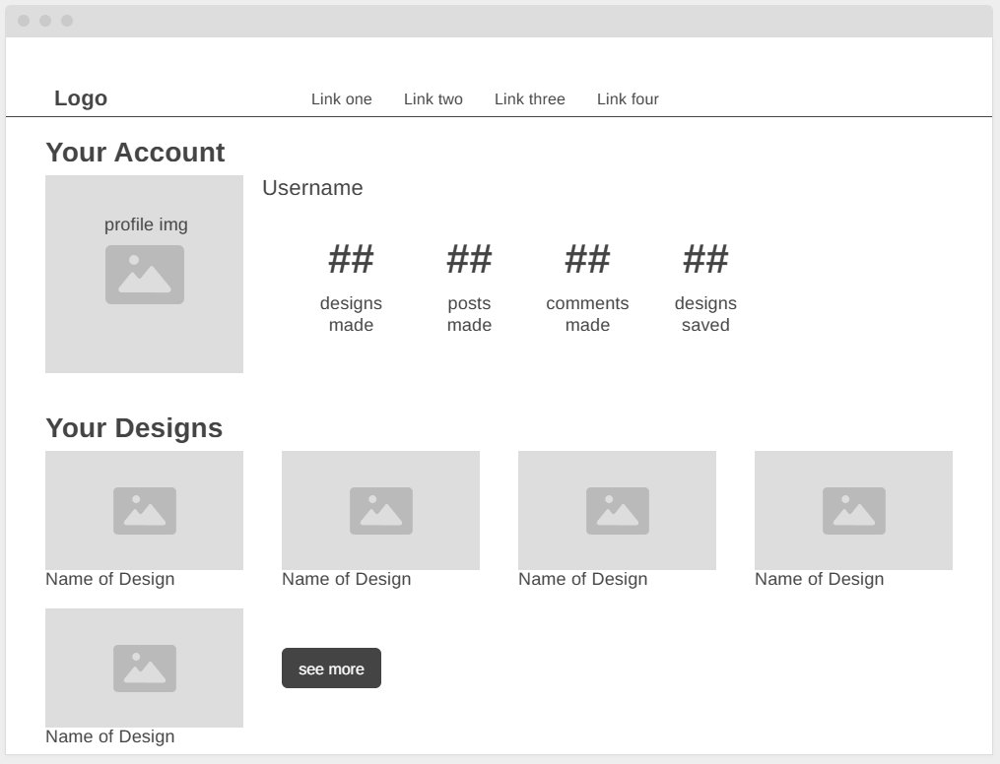

Wireframes
Sketching Vs Software
Sketching Wireframes
Pros:
Easy and fast to create and iterate
Unlimited options because you draw everything
Cons:
No copy/paste, drag/drop, or other digital shortcuts
Cannot set up interactivity
Wireframing Software
Pros:
Easy to adjust
May be able to add interactivity
Cons:
Limited elements
May not be intuitive
"The Nail Planner" Wireframes
By: Abigail Finn
Home Page

Nail Designer

Forums

Account
